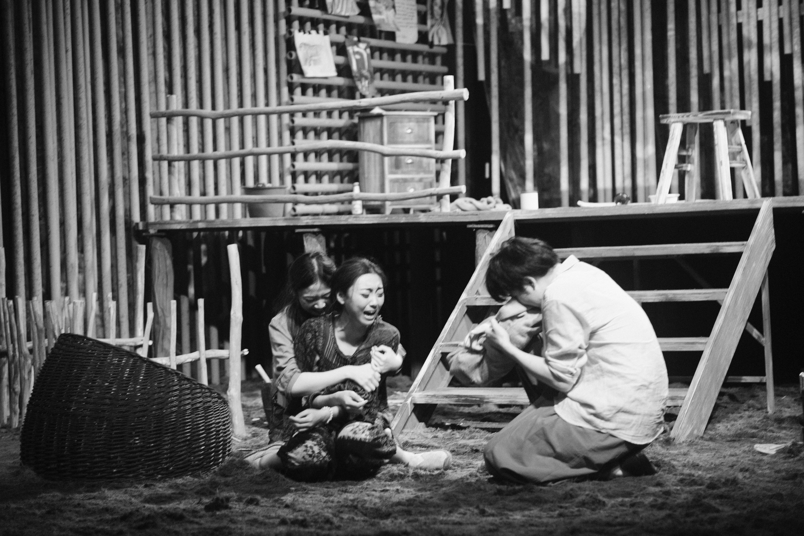

《人虎》
Educational theatre for young people aged 10 and above, made in collaboration with Western Norway University of Applied Sciences. Workshop tutor: Katrine Heggsta.


Educational theatre for young people aged 10 and above, made in collaboration with Western Norway University of Applied Sciences. Workshop tutor: Katrine Heggsta.
